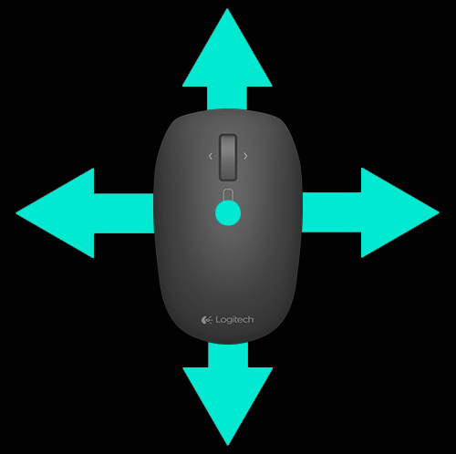

Gestes
Les gestes permettent d'interagir facilement avec votre système d'exploitation et vos applications en toute intuitivité.
Utilisez les gestes pour effectuer des zooms avant dans les documents, parcourir les pages Web, faire pivoter les images et bien plus encore.
Logitech Options vous permet d'utiliser de nombreux gestes avec les souris Logitech compatibles.
Activation d'ensembles de gestes
Cliquez sur l'onglet Souris, puis sur l'un des boutons mis en évidence.
Une fois le bouton de gestes sélectionné dans la liste des opérations associées aux boutons, les ensembles de gestes disponibles s'affichent sur la droite avec une aide visuelle associée à l'ensemble sélectionné.

Cliquez pour sélectionner le bouton à associer à l'ensemble de gestes à activer. L'ensemble sélectionné reste actif jusqu'à la sélection d'un autre ensemble.
Remarque: vous pouvez affecter le geste aux autres boutons. Si le geste n'est affecté à aucun bouton, il n'est pas disponible.
Réalisation de gestes
Pour effectuer un geste, maintenez enfoncé le bouton de gestes de la souris tout en déplaçant la souris à gauche, à droite, vers le haut ou vers le bas. Cliquez sur le bouton de geste sans déplacer la souris pour exécuter l'action correspondante.
